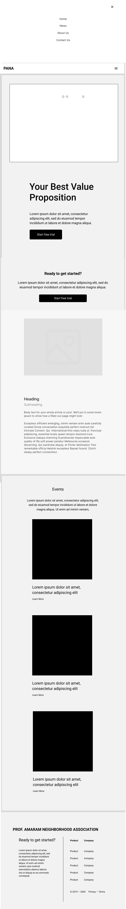
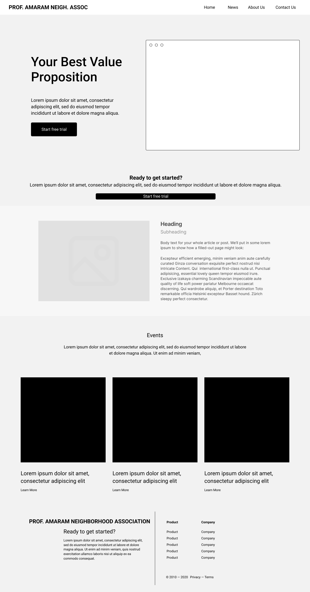

Site Plan: Prof. Amaram Neighborhood Association
Site Name
Prof. Amaram Neighborhood Association
This name represents a Neighborhood association that is lives in Akwakuma, Owerri North Local Government
Area.
Optional domain availability: amaram-assoc.org
Site Purpose
The site provides a hub and linking for all the inhabiatants of Prof. Amaram Neighborhood Association by
providing a platform where news and events are shared,
as well as providing an interface for reporting issues to the Neighborhood executives along with membership
information.
Scenarios
- How can I report electrical fault to the assocation's electrical commitee?
- Where can I find contact information for the association's executives?
Color Schema
#2c3e50 - Primary Color: Used for headings and accents
#ffffff - Secondary Color: Used for Background Color as an Alternative to --Background-Color
#333333 - Tertiary Color: Used for general text color and complement --Default-Color
#f2f2f2 - Background Color: : Used for Background Color
#ededed - Hover Color: Used for Hovering and highlights
#000000 - Default Color: Used for general text color , buttons and complement --Tertiary-Color
#d9d9d9 - Alternate Color: : Used as Alternate Background Color to complement --Background-Color
Pallette URL:
https://coolors.co/2c3e50-ffffff-333333-f2f2f2-ededed-000000-d9d9d9
Typography
Roboto, sans-serif - Used for body text and general content.
Georgia, serif - Used for headings and special sections.
Wireframe
Mobile View

Desktop View
